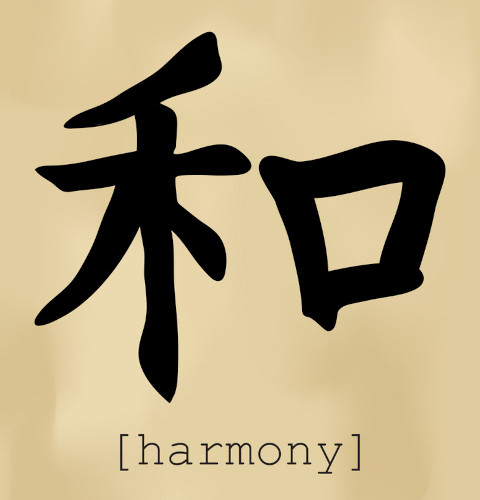
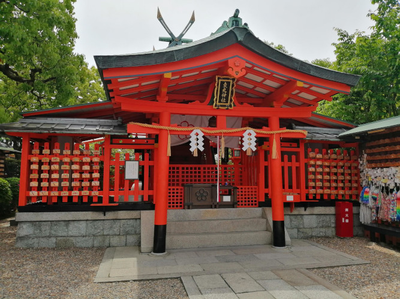

A Unique Culture
Harmony Of The Group
Japan's culture was influenced greatly by its natural disasters. It is thought that the frequent earthquakes and tsunamis fostered a desire to uphold the harmony of the group. It's hard to rebuild if everyone is quarreling with each other, after all. The pressure to not cause inconvenience for others and to self-sacrifice for the good of the community is omnipresent in Japan, from work culture to depictions of heroes. Once you are aware of it you start to see it everywhere.
Fluid Spiritualism
Religious practice in Japan is unique, in that most Japanese people would not say they are religious, while at the same time going to pray at Shinto shrines and holding Buddhist funerals. There is a casual, more practical attitude towards religion. It is not thought of in the same way as in the west, where religion is a very strict set of beliefs and practices. Japanese people will mix together beliefs and traditions from many different religions, something known as "syncretism."
An Old Country
The older a country is, the more history and traditions it accumulates, and Japan is no different. The first known habitation of the region dates back to 36,000 BC. Many tribes, cultures, and countries existed in the place now called Japan. Many wars and changing borders occurred, but in 1600 the country was unified by the Tokugawa shogunate. This started the Edo Period, where probably most of the iconic myths and traditions of Japan that you have heard of were born. It was during this time that Japan enacted a policy of isolation that lasted 220 years.
Isolation
Due to being mostly isolated, Japan was not altered much by outside forces. It gave the country freedom to establish its own unique customs and world views. This is not a luxury every country has been afforded throughout history. Oftentimes countries will pressure the other countries within their sphere of influence to be more like them, whether through simple osmosis or through colonialism and religious prosecution. However, this policy allowed Japan to escape outside influence for quite a long time. It did not last forever though.
Forceful Opening Of The Country
On March 31, 1854, the Convention of Kanagawa was signed between Japan and the United States. It was a treaty that effectively ended Japan’s policy of national seclusion, and opened its borders for trade. It had been a culmination of rising tensions between the two countries. Japan did not want to open, but the United States wanted to trade and was willing to force them with military might. In the end the USA got its way, and it ushered in a new era of imperialism for Japan. However, the rulers of Japan made an intentional effort to preserve traditional structures, artifacts, and practices even as the country modernized. May of these still persist to this day.